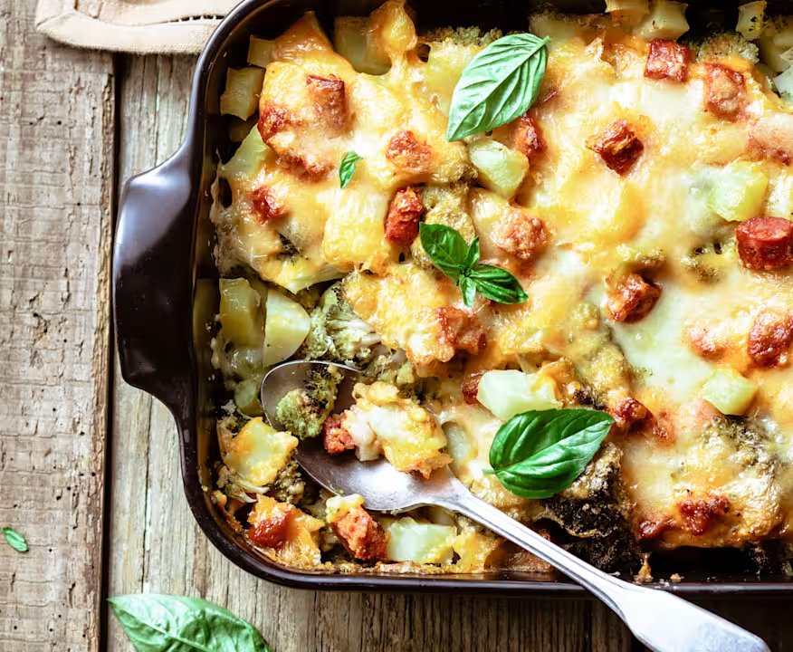

Gratin de pommes de terre, brocoli, comté et chorizo
Ingrédients
6×
- 100 g de comté
- 400 g d'eau
- 500 g de pommes de terre
- 700 g de brocoli
- 100 g de chorizo doux
- 30 g de beurre
- 50 g de farine
- 3 pincées de sel
- 2 pincées de poivre

Préparation
Étape 1
Mettre 100 g de comté dans le bol et râper 10 sec/vitesse 10. Réserver.
Étape 2
Mettre 400 g d'eau dans le bol, 500 g de pommes de terre en cubes dans le panier et 700 g de brocoli en bouquets dans le Varoma. Cuire à la vapeur 25 min/Varoma/vitesse 1.
Étape 3
Pendant ce temps, peler et couper en dés 100 g de chorizo doux. Mettre les légumes dans un plat à gratin et garder l’eau dans le bol.
Étape 4
Préchauffer le four à 180ºC. Ajouter 30 g de beurre, 50 g de farine, 3 pincées de sel et 2 pincées de poivre, cuire 5 min/100ºC/vitesse 3.
Étape 5
Ajouter le chorizo et mélanger 10 sec/sens inverse/vitesse 2. Verser sur les légumes, mélanger, parsemer de comté et gratiner 20 à 25min.
Résumé
100 g de comté
râper 10 sec/vitesse 10
400 g d'eau
500 g de pommes de terre
700 g de brocoli
Cuire à la vapeur 25 min/Varoma/vitesse 1
100 g de chorizo doux
peler et couper en dés
30 g de beurre
50 g de farine
3 pincées de sel
2 pincées de poivre
Préchauffer 180ºC cuire 5 min/100ºC/vitesse 3
mélanger 10 sec/sens inverse/vitesse 2 gratiner